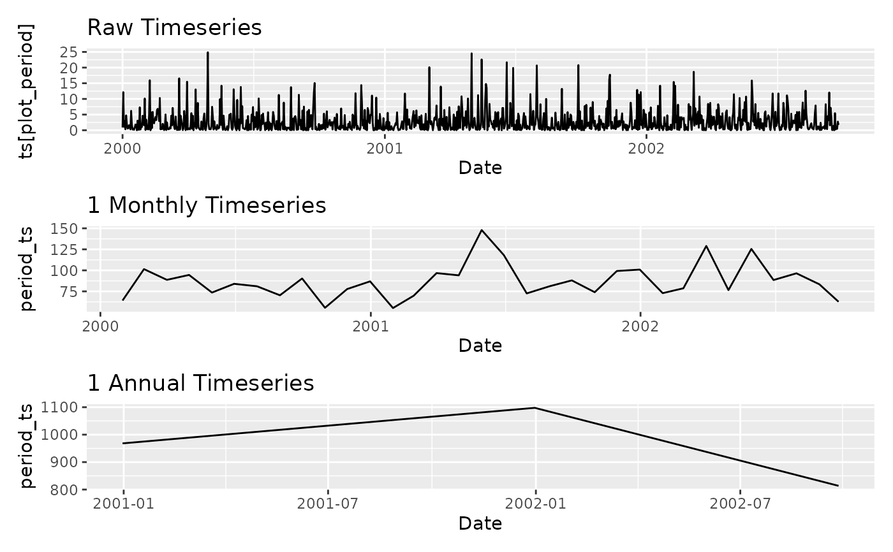

Aggregates an xts object to one or more coarser temporal scales using
endpoints and period.apply. Supports
user-defined seasonal aggregation via season_end dates and non-integer
period multipliers. Returns both the aggregated series and a combined
patchwork plot.
Usage
aggregate_xts(
ts,
periods = NA,
FUN = "mean",
period_multiplier = NA,
pstart = NA,
pend = NA,
season_end = NA,
mseason_title = NA,
...
)Arguments
- ts
An xts object containing the time series data.
- periods
Character vector of aggregation periods. Accepts
"mins","minutes","hours","days","weeks","months","quarters", and"years".- FUN
Function to aggregate the data. Defaults to
"mean".- period_multiplier
Numeric vector of multipliers for non-standard aggregation intervals. Must have the same length as
periods. Defaults to 1 for each period.- pstart
Plot start date (character or date). If
NA, the first date of the series is used.- pend
Plot end date (character or date). If
NA, the last date of the series is used.- season_end
Character vector of season end dates in
"%m-%d"format, e.g."10-15".- mseason_title
Title for the user-defined season plot.
- ...
Additional arguments passed to
FUN.
Value
A named list. The first element Combined_Plot is a
patchwork object combining all period plots. Subsequent elements
are named list_<period>, each a sub-list containing the
aggregated xts and its figure.
Examples
# Synthetic daily precipitation series
set.seed(123)
n <- 1000
x <- xts::xts(rgamma(n, shape = 0.6, scale = 5),
order.by = seq(as.Date("2000-01-01"), by = "day", length.out = n))
# Aggregate to monthly sums
agg <- aggregate_xts(x, c("months", "years"), FUN = "sum")
agg$Combined_Plot

# Custom seasonal aggregation
agg_seas <- aggregate_xts(x, periods = NA, FUN = "sum",
season_end = "09-30",
mseason_title = "Custom season")